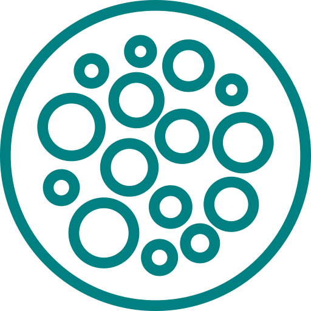
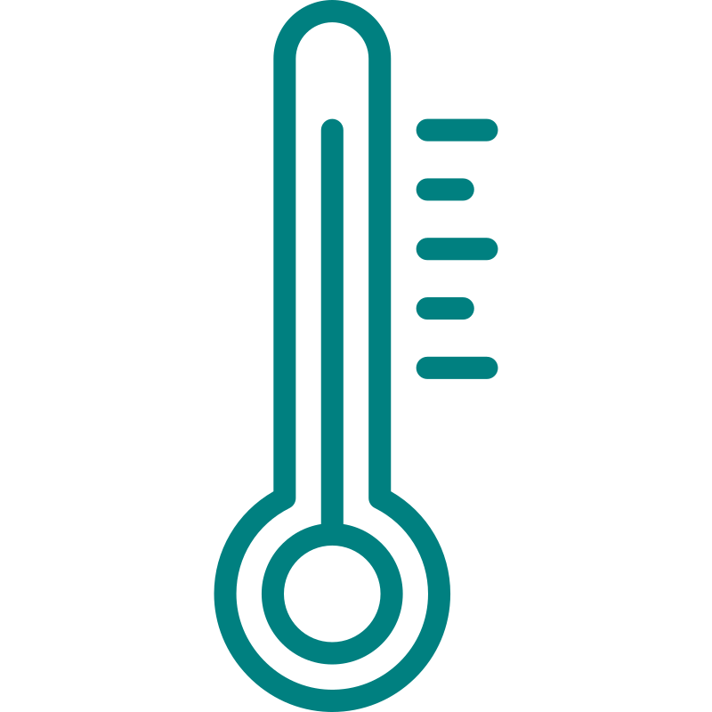

Wolfram
Prvek
1,5–34 mg/kg v zemské kůře
Objeven 1781 Carlem W. Scheelem
Vlastnosti
Protonové číslo
Relativní atomová hmotnost
Tvrdost
Elektronegativita
Pracovní zkušenosti
Žárovky
Říjen 1879- Už se tolik nepoužívají
V roce 1879 byla Thomasem Edisonem vynalezena žárovka s wolframovým vláknem. Když se ale podíváme na spektrum žárovky, všimneme si, že žárovka září hlavně v IR části - většina se vyzáří formou tepla. Účinnost této žárovky je méně něž 5%, zbytek se vyzáří jako neužitečné teplo. Wolframové žárovky byly nahrazeny LED žárovkami, které mají účinnost k 50%.
Penetrační náboje
2. sv. válka - Doteď
Díky své vysoké hustotě slouží wolfram jako materiál penetračních projektilů (penetrátorů). Ty jsou používány již od druhé světové války pro prorážení pancíře tanků, stěn bunkrů a opevnění.
Radiační stínění
Pseudoslitiny wolframu vyrobené práškovou metalurgií se využívají kvůli své dobré schopnosti odstínit rentgenové záření a záření gama jako materiál pro radiační stínění např. v kobaltových ozařovačích, používaných k ozařování zhoubných nádorů.
Vzdělání
Hustota
 Celoživotně
Jsem nejtěžším známým prvkem s hustotou 19,3 g/cm³. 19x větší hustota než voda.
Teplota tání a varu
 3410 - 5660
Teploty tání a varu: Teplota tání wolframu je 3410 °C a teplota varu je 5660 °C
Chemické vlastnosti
Od počátky věků
Wolfram je odolný vůči většině kyselin a zásad. Kombinuje se s kyslíkem za vysokých teplot. Ve volné přírodě je wolfram obvykle nereaktivní.
Fyzikální vlastnosti
Od objevení
Wolfram je velmi těžký, má velmi vysokou pevnost v tahu, vynikající pevnost při vysokých teplotách a nejnižší koeficient tepelné roztažnosti